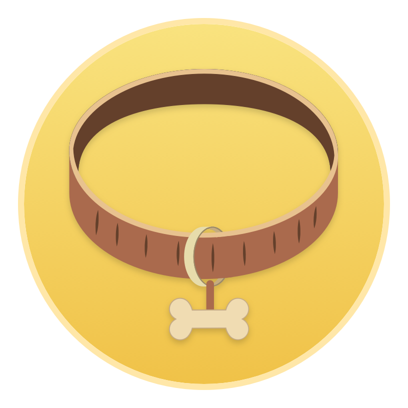
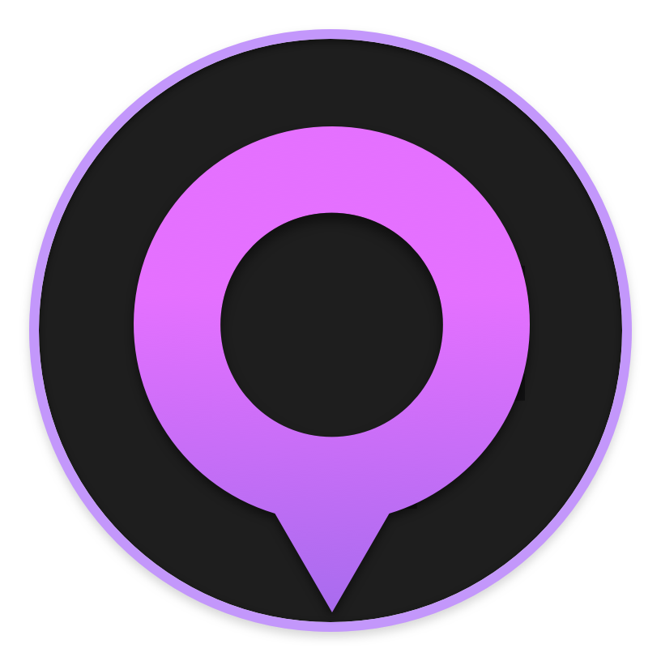

You can see more of my current and past projects on Dribbble.
Cities of all sizes are reorienting their transportation priorities toward people over cars. Rebranding streets as "complete," "shared," or "great" reflects a turn away from automobility as the only choice for urban travel. Local transportation officials and planners now place a larger focus on offering many modes of travel and consider quality-of-life rather than simply encouraging driving everywhere. Though cars are still dominant, the era of automobility seems to have peaked. Yet continued reductions in driving require true multi-modalism: rather than relying on one mode of transportation, or expecting that most driving trips can be substituted for transit trips, people need to be able to choose from a network of options, including not traveling at all.
Define
As the cost of driving increases through higher gas prices, tolls, and parking charges, more people are looking toward alternatives. Yet less driving does not necessarily mean more transit use. When people drive less they travel by all alternatives more; they also telecommute and use home deliveries. Greater use of alternative modes to driving adds bikes, pedestrians, trucks, transit, and taxis to already crowded streets. New thinking about the design and use of street space is needed as new modes, actors, technologies, and uses change the function of public roads.
Competitive Analysis
Whatever clear lines once existed between public and private transport have blurred. Start-up technology companies, large corporations, and informal operators offer meaningful alternatives to driving, but also subvert the traditional public monopoly for supplying transit services. Ultimately we don't know if private transit and app-based taxi services will succeed or improve transit ridership—that remains to be seen—but the increase in private transit operators is certainly different and affects investment and regulatory decisions.
Persona
The primary research was done in collaboration with IDEO in City of Columbus as part of the city transformation.
Beyond new challenges for management and allocation of street space, multi-modalism makes travel patterns less predictable and more difficult to anticipate for investment and maintenance. How we travel around cities changes as available alternatives increase.
One feature of planning for automobility, or really any particular travel mode, is that there is a nice symmetry to travel. If you leave your house in the morning as a driver, you are almost certainly going to make all subsequent trips for the day by car, eventually driving back to your garage. With many choices, however, we might leave home on foot to the coffee shop, then take transit to work, then cycle to the store and lug our groceries home in a taxi. For this example, one car has been replaced by four separate modes of travel, all of which represent choosing a mode for each trip based on what works best for each person.
There are two takeaways from the multi-modal travel day. First, the choice between driving and transit isn't one or the other. To reduce automobility, many alternatives must be provided, and not as a bonus. The second takeaway is that multi-modal cities have a lot of one-way travel. For shared-travel modes, this results in large imbalances of vehicles across the networks, leaving many without the options they expect when they want to use it. The rebalancing problem is hard enough for bike-share, let alone many different types of vehicles.
Multi-modal transportation options reflect the abundance of choice that make cities great. But having many choices means balancing many interests. The issues facing cities as they expand alternatives to driving are complex and should be treated as such by local officials, advocates, and transport planners. Redesigning streets to reduce reliance on cars and are big steps for cities, but these efforts will fall short if they don't welcome all travel modes—from walking and cycling to taxis and delivery trucks—as critical functions of our streets.
Ideate
We wanted to test to see if the users needed to see of the map at all times. To validate the assumption, we ideated two solutions. One with minimal map option e.g. for visually pinpointing a bus stop or walking towards one. The other was with fully loading maps like that of Uber or Lyft.

User flow
Created user flow to understand how the user will interact with the app.
Design
All of our wireframes and high-fidelity mockups are made using Sketch and prototypes were done using Sketch and Invision.Wireframes
We built two set of wireframes for map and mapless to validate the idea before going into designing high-fidelity mockups. Most of the users prefered minimal UI with the map for easy understanding and scanning. We validated out assumptions and decided to go with the map.
Prototype
More than 100 screens were created for the prototype with different variations.
Testing and iterating
We conducted over 12 user tests divided into three stages of testing, and compared completion rates and overall experiences.
Based on the users reaction and suggestions we changed some of the screens on the fly to see if that resonates with the user.

Development
The App is currently under development and is made production ready. During the development process, I work closely with the developers in providing asssets and help them understand the flow and interactions.
What I learnt?
Since this is a new space in the market, and my first time working with a map, I understood how the user behaviors change based on the situation and even if the problem is complex, the user always wants a simple solution.
That's it!

Precious - Pet Diet App
Daily food planner for pets with step by step instructions and option to buy ingredients.
Contrast - Transit App
High contrast transit app that could assist people with visual disability.
Ramweb - Student Portal
Colorado state student portal that assists students to quickly schelude classes.